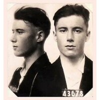

|
 Clavell's California mugshot Sent to San Quentin, 1927 |
| Year | Age | Event | |
|---|---|---|---|
| 1906 | Birth | Christchurch UK | |
| 1908 | 2 | Birth of brother: Arthur Charles Sheppard (1908-1963) | From England |
| 1909 | 3 | The Sheppard family emigrated to North America. | |
| 1910 | 4 | Birth of brother: Egerton Cecil Sheppard (1910-1973) | USA |
| 1914 |
8 |
Birth of brother: Robert Montague Sheppard (1914-2001) |
Alberta, Canada |
| 1917 | 11 | Birth of sister: Josephine Sheppard (twins) (1917-1950) | Alberta, Canada |
| 1917 | 11 | Birth of sister: Alice Sheppard (twins) (1917-1952) | Alberta, Canada |
| 1921 | 15 | Residence: Yale (in Canada) | British Columbia |
| 1926 |
20 |
Residence: San Quentin ! Served 6 months for "Vagrancy". |
California, USA |
| 1927 |
21 |
Residence: San Quentin ! Served 1 year, 4 months, 11 days for "Cheque Fraud". |
California, USA |
| 1933 | 27 | Marriage: Florence Atherton (1907-1984) | Alberta, Canada |
| 1937 |
31 |
Birth of daughter (to Ina Margaret George): Adoptive name: Yvonne Stanton (1937-1995) |
London, UK |
| 1939 |
33 |
Birth of son: Egerton Clavell Brougham Sheppard Adoptive name: Cecil Ashley Davies (1939-2009) |
London, UK |
| 1939 |
33 |
Birth of daughter: Ethel Grace Sheppard (1939- ) (To Ina Margaret George). TWIN to Egerton, adopted. |
London, UK |
| 1940 | 34 | Marriage: Ina Margaret George (1911-1967) | London, UK |
| 1944 |
38 |
Marriage: Ina Margaret George (1911-1967) This was the SECOND marriage to Ina George. Reason unknown. |
Cardiff, UK |
| 1944 | 38 | Birth of son: Clavell O. Sheppard (1944-1975) | Cardiff, UK |
| 1945 | 39 | Marriage: Helena Olive Manuel (1923-1968) | |
| 1951 |
45 |
Marriage: Audrey Winifred Gray (1924-2000) Possibly mother of Brett Sheppard. |
London, UK |
| 1961 |
55 |
Marriage: Patricia née McIntosh (1935-2021) For reasons unknown Clavell used the assumed name of "Norman McCarthy". |
Derby, UK |
| 1963 | 57 | Birth of son: Gino Marcus McCarthy (1963-1998) | Derby, UK |
| 1967 | 61 | Death of wife: Ina Margaret George/Opie (1911-1967) | Cardiff, UK |
| 1968 | 62 | Death of wife: Helena Olive Manuel (1923-1968) | |
| 1968 | 62 | Birth of daughter: Patricia Clavella McCarthy (1968- ) | Derby, UK |
| 1975 |
69 |
Death of son: Clavell O. Sheppard (1944-1975) ex Ina George, died by suicide aged 31 (barbiturate overdose). |
Cardiff, UK |
| 1976 |
70 |
Marriage: Patricia née McIntosh (1935-2021) This was the SECOND marriage to Pat, to hide Pat from the Derby police (by change of name). |
London, UK |
| 1983 |
77 |
Death: Percival Clavell Sheppard (1906-1983) Died from cancer. |
Horley, UK |
| ------ | -------- | ||
| 1984 | Death of wife: Florence Atherton (1907-1984) | ||
| 1995 |
Death of daughter: Yvonne Stanton/McNeely (1937-1995) |
California, USA |
|
| 1998 | Death of son: Gino Marcus Sheppard (1963-1998) | Horley, UK | |
| 2000 | Death of wife: Audrey Winifred Gray (1924-2000) | ||
| 2021 | Death of wife: Patricia née McIntosh (1935-2021) | Bromley, UK |
|
Clavell Sheppard was a predator. A shark swimming in an ocean of vulnerable women. Women for whom the offer of marriage would be irresistible. An apparent solution to their problems of loneliness and poverty, hopefully a guarantee of happiness and security with the added prospect of future childbirth. Ancestry shows that Clavell Sheppard married five women. One marriage was in Alberta, Canada and all the others were in the UK. Children were born from most or all of these marriages, but this information is restricted by Ancestry's policy of privacy. In 1961 Clavell married Patricia using the assumed name of "Norman McCarthy". The reason for this is unknown although unlikely to be good. Patricia was unaware that her new married name was false. In 1976 Clavell reverted to his original name. He married Patricia for the SECOND time thus changing her name to "Sheppard". The reason was to hide from the Derby police who were seeking to arrest "Norman McCarthy" on suspicion of the robbery of a postman. Clavell was aged 69 years and that was probably his last crime. I have since discovered that Clavell had a criminal record in the UK comprising six entries. I have no idea what these entries were for, neither do I wish to know. Ancestry contains no record that Clavell was ever divorced. So he was a serial bigamist as well as a confidence trickster and whatever else. This is the behaviour of a psychopath. |